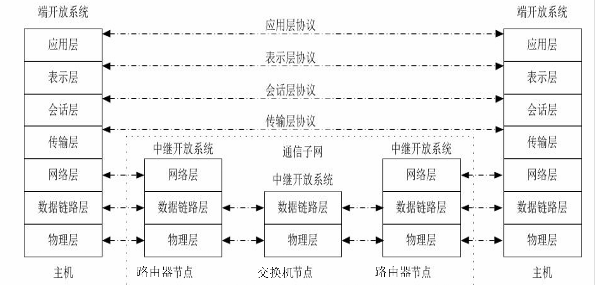
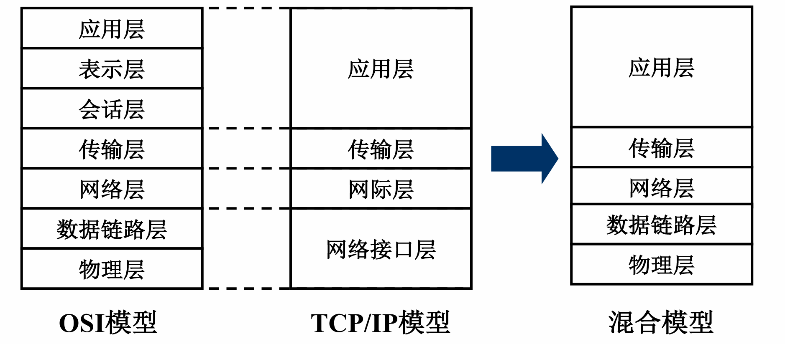

第1章 计算机网络体系结构
第一章 计算机网络概述¶
一、概念与功能¶
- 概念：计算机网络是将分散且具有独立功能的计算机系统，通过通信设备与线路连接，由软件实现资源共享和信息传递的系统 。它是互连的、自治的计算机集合 。
- 主要功能：
- 数据通信：最基本的功能 。
- 资源共享：包括硬件、软件和数据共享 。
- 分布式处理：多台计算机承担同一任务的不同部分（如 Hadoop）。
- 提高可靠性：通过替代机实现 。
- 负载均衡：在各计算机之间分配工作 。
二、组成与分类¶
-
组成部分：硬件(主机，通信链路，交换设备)、软件、协议(计算机网络核心) 。
-
工作方式：分为边缘部分（用户直接使用，包括 C/S 和 P2P 方式，用于通信和资源共享）和核心部分（网络+路由器，为边缘部分服务）。

-
功能组成：
-
通信子网：负责数据通信（对应 OSI 低三层）。
-
资源子网：负责资源共享/数据处理（对应 OSI 高三层）。
-
分类方式：
-
按分布范围：广域网 (WAN)、城域网 (MAN)、局域网 (LAN)、个人区域网 (PAN) 。
- 按交换技术：电路交换、报文交换、分组交换 。
| 交换方式 | 主要特点 | 优点 | 缺点 |
|---|---|---|---|
| 电路交换 | 建立专用物理通路；通话期间独占资源 建立连接 \(\rightarrow\)传输数据 \(\rightarrow\)释放连接 |
1. 传输时延小 2. 有序传输 3. 没有冲突 4. 实时性强 |
1. 建立连接时间长 2. 线路利用率低 3. 缺乏灵活性 4. 不同终端难以互通 |
| 报文交换 | 以报文为单位；采用存储转发机制 | 1. 无需建立连接 . 线路利用率高 3. 可动态分配线路 4. 多目标服务 |
1. 引起转发时延（存储转发过程） 2. 节点需要大容量缓冲区 3. 对报文大小有限制 |
| 分组交换 | 将报文拆分为分组；采用存储转发机制 | 1. 无需建立连接 2. 线路利用率极高 3. 简化存储管理（分组定长） 4. 减少出错概率和重传数据量 |
1. 引起转发时延 2. 需要传输额外的信息（首部开销） 3. 可能出现失序、丢失或重复分组 |
- 按拓扑结构：总线型、星型、环型、网状型（常用于广域网）。
- 按传输技术：广播式网络（共享信道）、点对点网络（分组存储转发）。
三、性能指标¶
-
速率：数据率或比特率，单位为 b/s, kb/s, Mb/s 等 。注意速率单位换算通常以 \(10^3\)为底，而存储容量单位换算以 \(2^{10}\)为底 。
-
带宽：网络中通信线路传送数据的能力，即单位时间内能通过的“最高数据率” 。
-
吞吐量：单位时间内通过某个网络的数据量，受带宽或额定速率限制 。
-
时延：数据从网络一端传到另一端所需的时间，包括：
-
发送时延（传输时延）：数据长度 / 信道带宽 。
-
传播时延：信道长度 / 电磁波传播速率 。
-
排队时延与处理时延 。
-
时延带宽积：\(\text{传播时延} \times \text{带宽}\)，表示以比特为单位的链路容量 。
-
往返时延 (RTT)：从发送数据到收到确认经历的时延 。
-
利用率：分为信道利用率和网络利用率。利用率过高会引起时延急剧增大 。
四、体系结构与参考模型¶
体系结构and实现：体系结构是抽象的，实现是具体的
- 网络的体系结构：计算机网络的各层及其协议的集合，是对该网络及其实现的功能的精确定义
- 实现：在遵循这种体系结构的前提下，用何种软件硬件实现的问题
1.分层基本原则¶
-
每层功能相对独立 。
-
界面自然清晰，交流少 。
-
下层为相邻上层提供服务，上层使用下层接口 。
-
协议是“水平”的，服务是“垂直”的 。

2.协议¶
- 定义：控制对等实体之间通信的规则的集合
- 三要素：语法，语义，同步(时序)
- 语法：规定数据与控制信息的格式，比如TCP报文段结构由其语法决定
- 语义：规定需要发出何种信息、完成何种动作以及做出何种应答，比如TCP连接建立过程中每次握手执行的操作
- 同步：规定各操作的条件及事件发生的先后顺序，例如TCP连接过程中三次握手的时序关系
3.服务¶
- 定义：下层为紧邻的上层提供的功能调用，是垂直的
- 分类
| 分类标准 | 服务类型 | 定义与特点 |
|---|---|---|
| 连接状态 | 面向连接服务 | 传输前必须先发出建立连接请求，成功后才能开始传输，结束后释放连接（如 TCP） 。 |
| 无连接服务 | 不需要预先建立连接，直接进行数据传输，每个分组独立选择路由（如 UDP） 。 | |
| 可靠性程度 | 可靠服务 | 网络具有纠错、检错和确认机制，确保数据正确、无误地到达接收方 。 |
| 不可靠服务 | 尽力而为（Best Effort）地传输，不保证数据准确到达，可靠性由高层处理 。 | |
| 确认机制 | 有确认服务 | 接收方收到数据后必须发回确认信号，发送方收到确认后才认为发送成功 。 |
| 无确认服务 | 接收方收到数据后不发回确认，通常用于实时性要求高但对错误不敏感的场景 。 | |
| 功能层次 | 通信子网服务 | 物理层、数据链路层和网络层负责数据通信任务 。 |
| 资源子网服务 | 会话层、表示层和应用层负责数据处理和资源共享 。 |
4.三个概念¶
-
协议数据单元(PDU)：对等层之间传送的数据单元，由服务数据单元(SDU)和协议控制信息(PCI)组成。
-
服务数据单元(SDU)：对等层之间传送的数据单元，为完成上一层所要求的功能而提供的数据。
-
协议控制信息(PCI)：对等层之间传送的控制协议操作信息，包括协议号、序列号、确认号、窗口大小等。
5.OSI 七层参考模型¶

-
各层核心功能：
-
物理层：实现比特流的透明传输，定义接口特性 。
-
数据链路层：成帧、差错控制、流量控制，传输单位为帧 。
-
网络层：路由选择、拥塞控制，实现异构网络互联，单位为数据报 。
-
传输层：主机中进程间的通信（端到端），可靠/不可靠传输，复用分用 。
-
会话层：建立、管理、终止会话，设置校验点同步 。
-
表示层：数据格式变换、加密解密、压缩恢复 。
-
应用层：用户与网络的界面，典型协议有 FTP, SMTP, HTTP 。
6.TCP/IP 模型与五层模型¶

- TCP/IP 四层模型：应用层、传输层、网际层、网络接口层 。
- 五层参考模型：综合 OSI 和 TCP/IP 优点，分为应用层、传输层、网络层、数据链路层、物理层 。
- 数据封装：从上层到下层依次添加首部 (PCI)，形成各层协议数据单元 (PDU)，物理层最终转为比特流 。